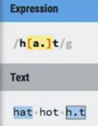
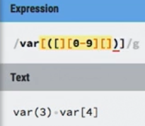
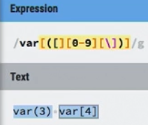
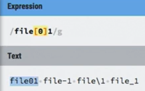
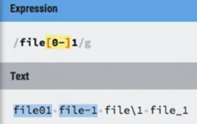
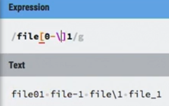
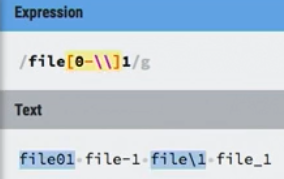
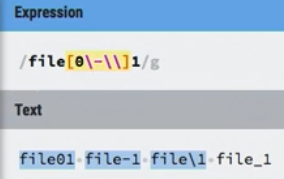
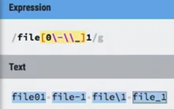

most metacharacters are already escaped within character sets
So, there is no need to escape them again
the period . is a period inside a character set, and NOT a Wildcard
/h[a.]t/ matches "hat" and "h.t" but NOT "hot"
a wildcard . inside a character set /h[.]t/ would be unecessary anyways
The Exceptions to this rule are:
To use these exceptions literally, we need to escape them. This is because the end bracket ] will cause the regex engine to think the character set is done,dash/hypen - is range within character set, if we mean a literal backslash \ we need to escape it /\\/ d
/var[[(][0-9][\])]/
var(3) var[4]
 the first [[ is okay because it hasn't been closed so we don't have to escape it
but we need to escape the end bracket
/file[0-9\-\\_]1
file01 file-1 file\1 file_1
notice how originally we do not need to escape the dash -, but the backslash will escape it and make it a range, not sure why??
we need to escape the dash - and escape the backslash \\ to prevent the dash/hypen - from becoming a range, i think?
This is why it is good practice to escape a dash within a character set to prevent it from becoming a range
Regardless, just remember to escape a dash - when you do not want it to be a range